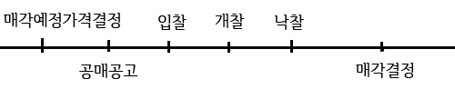

제2조(정의) ① 이 법에서 사용하는 용어의 뜻은 다음과 같다. 1. “납부기한”이란 납세의무가 확정된 국세(가산세를 포함한다. 이하 같다)를 납부하여야 할 기한으로서 다음 각 목의 구분에 따른 기한을 말한다. 가. 법정납부기한: 국세의 종목과 세율을 정하고 있는 법률, 「국세기본법」, 「조세특례제한법」 및 「국제조세조정에 관한 법률」에서 정한 기한 나. 지정납부기한: 관할 세무서장이 납부고지를 하면서 지정한 기한 2. “체납”이란 국세를 지정납부기한까지 납부하지 아니하는 것을 말한다. 다만, 지정납부기한 후에 납세의무가 성립ㆍ확정되는 「국세기본법」 제47조의4에 따른 납부지연가산세 및 같은 법 제47조의5에 따른 원천징수 등 납부지연가산세의 경우 납세의무가 확정된 후 즉시 납부하지 아니하는 것을 말한다. 3. “체납자”란 국세를 체납한 자를 말한다. 4. “체납액”이란 체납된 국세와 강제징수비를 말한다.
제4조(다른 법률과의 관계) 국세의 징수에 관하여 「국세기본법」이나 다른 세법에 특별한 규정이 있는 경우를 제외하고는 이 법에서 정하는 바에 따른다.제6조(납세자에 대한 납부고지 등) ① 관할 세무서장은 납세자로부터 국세를 징수하려는 경우 국세의 과세기간, 세목, 세액, 산출 근거, 납부하여야 할 기한(납부고지를 하는 날부터 30일 이내의 범위로 정한다) 및 납부장소를 적은 납부고지서를 납세자에게 발급하여야 한다. 다만, 「국세기본법」 제47조의4에 따른 납부지연가산세 및 같은 법 제47조의5에 따른 원천징수 등 납부지연가산세 중 지정납부기한이 지난 후의 가산세를 징수하는 경우에는 납부고지서를 발급하지 아니할 수 있다. ② 관할 세무서장은 납세자가 체납액 중 국세만을 완납하여 강제징수비를 징수하려는 경우 강제징수비의 징수와 관계되는 국세의 과세기간, 세목, 강제징수비의 금액, 산출 근거, 납부하여야 할 기한(강제징수비 고지를 하는 날부터 30일 이내의 범위로 정한다) 및 납부장소를 적은 강제징수비고지서를 납세자에게 발급하여야 한다. 제7조(제2차 납세의무자 등에 대한 납부고지) ① 관할 세무서장은 납세자의 체납액을 제2차 납세의무자등으로부터 징수하는 경우 징수하려는 체납액의 과세기간, 세목, 세액, 산출 근거, 납부하여야 할 기한(납부고지를 하는 날부터 30일 이내의 범위로 정한다), 납부장소, 제2차 납세의무자등으로부터 징수할 금액, 그 산출 근거, 그 밖에 필요한 사항을 적은 납부고지서를 제2차 납세의무자등에게 발급하여야 한다.
제9조(납부기한 전 징수) ① 관할 세무서장은 납세자에게 다음 각 호의 어느 하나에 해당하는 사유가 있는 경우 납부기한 전이라도 이미 납세의무가 확정된 국세를 징수할 수 있다. 1. 국세, 지방세 또는 공과금의 체납으로 강제징수 또는 체납처분이 시작된 경우 2. 「민사집행법」에 따른 강제집행 및 담보권 실행 등을 위한 경매가 시작되거나 「채무자 회생 및 파산에 관한 법률」에 따른 파산선고를 받은 경우 3. 「어음법」 및 「수표법」에 따른 어음교환소에서 거래정지처분을 받은 경우 4. 법인이 해산한 경우 5. 국세를 포탈(逋脫)하려는 행위가 있다고 인정되는 경우 6. 납세관리인을 정하지 아니하고 국내에 주소 또는 거소를 두지 아니하게 된 경우 ② 관할 세무서장은 제1항에 따라 납부기한 전에 국세를 징수하려는 경우 당초의 납부기한보다 단축된 기한을 정하여 납세자에게 납부고지를 하여야 한다. -------- : 종전의 {납기전 징수}가 {납부기한 전 징수}로 용어가 변경됨
제10조(독촉) ① 관할 세무서장은 납세자가 국세를 지정납부기한까지 완납하지 아니한 경우 지정납부기한이 지난 후 10일 이내에 체납된 국세에 대한 독촉장을 발급하여야 한다. 다만, 제9조에 따라 국세를 납부기한 전에 징수하거나 체납된 국세가 일정한 금액 미만인 경우 등 대통령령으로 정하는 경우에는 독촉장을 발급하지 아니할 수 있다. ② 관할 세무서장은 제1항 본문에 따라 독촉장을 발급하는 경우 독촉을 하는 날부터 20일 이내의 범위에서 기한을 정하여 발급한다.제13조(재난 등으로 인한 납부기한등의 연장) ① 관할 세무서장은 납세자가 다음 각 호의 어느 하나에 해당하는 사유로 국세를 납부기한 또는 독촉장에서 정하는 기한(이하 이 조, 제15조 및 제16조에서 “납부기한등”이라 한다)까지 납부할 수 없다고 인정되는 경우 대통령령으로 정하는 바에 따라 납부기한등을 연장(세액을 분할하여 납부하도록 하는 것을 포함한다. 이하 같다)할 수 있다. 1. 납세자가 재난 또는 도난으로 재산에 심한 손실을 입은 경우 2. 납세자가 경영하는 사업에 현저한 손실이 발생하거나 부도 또는 도산의 우려가 있는 경우 3. 납세자 또는 그 동거가족이 질병이나 중상해로 6개월 이상의 치료가 필요한 경우 또는 사망하여 상중(喪中)인 경우 4. 그 밖에 납세자가 국세를 납부기한등까지 납부하기 어렵다고 인정되는 경우로서 대통령령으로 정하는 경우 --- ② 납세자는 제1항 각 호의 사유로 납부기한등의 연장을 받으려는 경우 대통령령으로 정하는 바에 따라 관할 세무서장에게 신청할 수 있다. ③ 관할 세무서장은 제1항에 따라 납부기한등을 연장하는 경우 대통령령으로 정하는 바에 따라 즉시 납세자에게 그 사실을 통지하여야 한다. ④ 관할 세무서장은 제2항에 따른 신청을 받은 경우 납부기한등의 만료일까지 대통령령으로 정하는 바에 따라 납세자에게 납부기한등의 연장 승인 여부를 통지하여야 한다. --- ⑤ 납세자가 납부기한등의 만료일 10일 전까지 제2항에 따른 신청을 하였으나 관할 세무서장이 그 신청일부터 10일 이내에 승인 여부를 통지하지 아니한 경우에는 신청일부터 10일이 되는 날에 제2항에 따른 신청을 승인한 것으로 본다.
제14조(납부고지의 유예) ① 관할 세무서장은 납세자가 제13조제1항 각 호의 어느 하나에 해당하는 사유로 국세를 납부할 수 없다고 인정되는 경우 대통령령으로 정하는 바에 따라 납부고지를 유예(세액을 분할하여 납부고지하는 것을 포함한다. 이하 같다)할 수 있다. ② 납세자는 제13조제1항 각 호의 사유로 납부고지의 유예를 받으려는 경우 대통령령으로 정하는 바에 따라 관할 세무서장에게 신청할 수 있다. ③ 관할 세무서장은 제1항에 따라 납부고지를 유예하는 경우 대통령령으로 정하는 바에 따라 즉시 납세자에게 그 사실을 통지하여야 한다. ④ 관할 세무서장은 제2항에 따라 납부고지의 유예를 신청받은 경우 납부고지 예정인 국세의 납부하여야 할 기한의 만료일까지 대통령령으로 정하는 바에 따라 납세자에게 납부고지 유예의 승인 여부를 통지하여야 한다. ⑤ 납세자가 납부고지 예정인 국세의 납부하여야 할 기한의 만료일 10일 전까지 제2항에 따른 신청을 하였으나 관할 세무서장이 신청일부터 10일 이내에 승인 여부를 통지하지 아니한 경우에는 신청일부터 10일이 되는 날에 제2항에 따른 신청을 승인한 것으로 본다. 제15조(납부기한등 연장 등에 관한 담보) 관할 세무서장은 제13조에 따른 납부기한등의 연장 또는 제14조에 따른 납부고지의 유예를 하는 경우 그 연장 또는 유예와 관계되는 금액에 상당하는 제18조에 따른 납세담보의 제공을 요구할 수 있다. 다만, 납세자가 사업에서 심각한 손해를 입거나 그 사업이 중대한 위기에 처한 경우로서 관할 세무서장이 그 연장된 납부기한등까지 해당 국세를 납부할 수 있다고 인정하는 경우 등 대통령령으로 정하는 경우에는 그러하지 아니하다.제57조(압류 해제의 요건) ① 관할 세무서장은 다음 각 호의 어느 하나에 해당하는 경우 압류를 즉시 해제하여야 한다. 1. 압류와 관계되는 체납액의 전부가 납부 또는 충당(국세환급금, 그 밖에 관할 세무서장이 세법상 납세자에게 지급할 의무가 있는 금전을 체납액과 대등액에서 소멸시키는 것을 말한다. 이하 이 조, 제60조제1항 및 제71조제5항에서 같다)된 경우 2. 국세 부과의 전부를 취소한 경우 3. 여러 재산을 한꺼번에 공매(公賣)하는 경우로서 일부 재산의 공매대금으로 체납액 전부를 징수한 경우 4. 총 재산의 추산(推算)가액이 강제징수비(압류에 관계되는 국세에 우선하는 「국세기본법」 제35조제1항제3호에 따른 채권 금액이 있는 경우 이를 포함한다)를 징수하면 남을 여지가 없어 강제징수를 종료할 필요가 있는 경우. 다만, 제59조에 따른 교부청구 또는 제61조에 따른 참가압류가 있는 경우로서 교부청구 또는 참가압류와 관계된 체납액을 기준으로 할 경우 남을 여지가 있는 경우는 제외한다. 5. 그 밖에 제1호부터 제4호까지의 규정에 준하는 사유로 압류할 필요가 없게 된 경우 ② 관할 세무서장은 다음 각 호의 어느 하나에 해당하는 경우 압류재산의 전부 또는 일부에 대하여 압류를 해제할 수 있다. 1. 압류 후 재산가격이 변동하여 체납액 전액을 현저히 초과한 경우 2. 압류와 관계되는 체납액의 일부가 납부 또는 충당된 경우 3. 국세 부과의 일부를 취소한 경우 4. 체납자가 압류할 수 있는 다른 재산을 제공하여 그 재산을 압류한 경우 ③ 관할 세무서장은 제1항제4호 본문에 따른 사유로 압류를 해제하려는 경우 제106조에 따른 국세체납정리위원회의 심의를 거쳐야 한다.
제64조(매각의 착수시기) ① 관할 세무서장은 압류 후 1년 이내에 매각을 위한 다음 각 호의 어느 하나에 해당하는 행위를 하여야 한다. 다만, 체납된 국세와 관련하여 심판청구등이 계속 중인 경우, 이 법 또는 다른 세법에 따라 압류재산의 매각을 유예한 경우, 압류재산의 감정평가가 곤란한 경우, 그 밖에 이에 준하는 사유로 법률상ㆍ사실상 매각이 불가능한 경우에는 그러하지 아니하다. 1. 제67조에 따라 수의계약으로 매각하려는 사실의 체납자 등에 대한 통지 2. 제72조에 따른 공매공고 3. 제103조제1항에 따라 공매 또는 수의계약을 대행하게 하는 의뢰서의 송부 ② 관할 세무서장은 제1항 각 호 외의 부분 단서의 사유가 해소되어 매각이 가능해진 때에는 지체 없이 제1항 각 호의 어느 하나에 해당하는 행위를 하여야 한다. --- 압류 후 매각하지 않고 방치하는 경우를 방지하기 위해 매각 강제규정을 둠
제67조 (수의계약) 관할 세무서장은 압류재산이 다음 각 호의 어느 하나에 해당하는 경우 수의계약으로 매각할 수 있다. 1. 수의계약으로 매각하지 아니하면 매각대금이 강제징수비 금액 이하가 될 것으로 예상되는 경우 2. 부패ㆍ변질 또는 감량되기 쉬운 재산으로서 속히 매각하지 아니하면 그 재산가액이 줄어들 우려가 있는 경우 3. 압류한 재산의 추산가격이 1천만원 미만인 경우 4. 법령으로 소지(所持) 또는 매매가 금지 및 제한된 재산인 경우 5. 제1회 공매 후 1년간 5회 이상 공매하여도 매각되지 아니한 경우 6. 공매가 공익(公益)을 위하여 적절하지 아니한 경우 . 제79조(공유자·배우자의 우선매수권) ① 공유자는 공매재산이 공유물의 지분인 경우 매각결정기일 전까지 공매보증을 제공하고 다음 각 호의 구분에 따른 가격으로 공매재산을 우선매수하겠다는 신청을 할 수 있다. 1. 최고가 매수신청인이 있는 경우: 최고가 매수신청가격 2. 최고가 매수신청인이 없는 경우: 공매예정가격 ② 체납자의 배우자는 공매재산이 제48조제4항에 따라 압류한 부부공유의 동산 또는 유가증권인 경우 제1항을 준용하여 공매재산을 우선매수하겠다는 신청을 할 수 있다. ③ 관할 세무서장은 제1항 또는 제2항에 따른 우선매수 신청이 있는 경우 제82조제3항 및 제87조제1항제1호에도 불구하고 그 공유자 또는 체납자의 배우자에게 매각결정을 하여야 한다. ④ 관할 세무서장은 여러 사람의 공유자가 우선매수 신청을 하고 제3항의 절차를 마친 경우 공유자 간의 특별한 협의가 없으면 공유지분의 비율에 따라 공매재산을 매수하게 한다. ⑤ 관할 세무서장은 제3항에 따른 매각결정 후 매수인이 매수대금을 납부하지 아니한 경우 최고가 매수신청인에게 다시 매각결정을 할 수 있다. 제80조(매수인의 제한) 다음 각 호의 어느 하나에 해당하는 자는 자기 또는 제3자의 명의나 계산으로 압류재산을 매수하지 못한다. 1. 체납자 2. 세무공무원 3. 매각 부동산을 평가한 감정평가법인등제66조(공매) ① 관할 세무서장은 압류한 부동산등, 동산, 유가증권, 그 밖의 재산권과 제52조제2항에 따라 체납자를 대위하여 받은 물건(금전은 제외한다)을 대통령령으로 정하는 바에 따라 공매한다. ② 제1항에도 불구하고 관할 세무서장은 압류한 재산이 「자본시장과 금융투자업에 관한 법률」에 따른 증권시장에 상장된 증권인 경우 해당 시장에서 직접 매각할 수 있다. ③ 제1항 및 제2항에도 불구하고 제31조제2항에 따라 압류한 재산은 그 압류와 관계되는 국세의 납세 의무가 확정되기 전에는 공매할 수 없다. ④ 제1항 및 제2항에도 불구하고 심판청구등이 계속 중인 국세의 체납으로 압류한 재산은 그 신청 또는 청구에 대한 결정이나 소(訴)에 대한 판결이 확정되기 전에는 공매할 수 없다. 다만, 그 재산이 제67조제2호에 해당하는 경우에는 그러하지 아니하다.
제68조(공매예정가격의 결정) ① 관할 세무서장은 압류재산을 공매하려면 그 공매예정가격을 결정하여야 한다. ② 관할 세무서장은 공매예정가격을 결정하기 어려운 경우 대통령령으로 정하는 바에 따라 감정인(鑑定人)에게 평가를 의뢰하여 그 가액을 참고할 수 있다. ③ 감정인은 제2항의 평가를 위하여 필요한 경우 제69조제2항(공매재산에 대한 현황조사)에 따른 조치를 할 수 있다. ④ 관할 세무서장은 감정인에게 공매대상 재산의 평가를 의뢰한 경우 대통령령으로 정하는 바에 따라 수수료를 지급할 수 있다.제82조(입찰서 제출과 개찰) ③ 공매를 집행하는 공무원은 최고가 매수신청인을 정한다. 이 경우 최고가 매수신청가격이 둘 이상이면 즉시 추첨으로 최고가 매수신청인을 정한다(국7.20) ④ 공매를 집행하는 공무원은 제3항 후단을 적용할 때 해당 매수신청인 중 출석하지 아니한 자 또는 추첨을 하지 아니한 자가 있는 경우 입찰 사무와 관계없는 공무원으로 하여금 대신하여 추첨하게 할 수 있다. ⑤ 공매를 집행하는 공무원은 공매예정가격 이상으로 매수신청한 자가 없는 경우 즉시 그 장소에서 재입찰을 실시할 수 있다
 제88조(공매의 취소 및 정지) ① 관할 세무서장은 다음 각 호의 어느 하나에 해당하는 경우 공매를 취소하여야 한다. 1. 해당 재산의 압류를 해제한 경우 2. 그 밖에 공매를 진행하기 곤란한 경우로서 대통령령으로 정하는 경우 ② 관할 세무서장은 다음 각 호의 어느 하나에 해당하는 경우 공매를 정지하여야 한다. 1. 제105조에 따라 압류 또는 매각을 유예한 경우 2. 「국세기본법」 제57조 또는 「행정소송법」 제23조에 따라 강제징수에 대한 집행정지의 결정이 있는 경우 3. 그 밖에 공매를 정지하여야 할 필요가 있는 경우로서 대통령령으로 정하는 경우 ③ 관할 세무서장은 매각결정기일 전에 공매를 취소한 경우 공매취소 사실을 공고하여야 한다. ④ 관할 세무서장은 제2항에 따라 공매를 정지한 후 그 사유가 소멸되어 공매를 계속할 필요가 있다고 인정하는 경우 즉시 공매를 속행하여야 한다. 징수유예(납부기한 등의 연장) 사유 : 재해,도난 등으로 재산에 심한 손실 : 사업에 현저한 손실 : 사업이 중대한 위기 : {납세자,동거가족} 장기치료 : 조세조약에 따라 상호합의절차가 진행 암기팁! {재해} {사업장}은 {장기치료} 받도록 {상호합의}제107조(납세증명서의 제출) ① 납세자는 다음 각 호의 어느 하나에 해당하는 경우 대통령령으로 정하는 바에 따라 납세증명서를 제출하여야 한다. 1. 국가, 지방자치단체 또는 대통령령으로 정하는 정부 관리기관으로부터 대금을 지급받을 경우 2. 「출입국관리법」 제31조에 따른 외국인등록 또는 「재외동포의 출입국과 법적 지위에 관한 법률」 제6조에 따른 국내거소신고를 한 외국인이 체류기간 연장허가 등 대통령령으로 정하는 체류 관련 허가를 법무부장관에게 신청하는 경우 3. 내국인이 해외이주 목적으로 「해외이주법」 제6조에 따라 외교부장관에게 해외이주신고를 하는 경우 ② 제1항에 따른 납세증명서는 발급일 현재 다음 각 호의 금액을 제외하고는 다른 체납액이 없다는 사실을 증명하는 문서를 말하며, 제13조에 따라 지정납부기한이 연장된 경우 그 사실도 기재되어야 한다. 1. 제13조에 따른 독촉장에서 정하는 기한의 연장에 관계된 금액 2. 제105조에 따른 압류ㆍ매각의 유예액 3. 그 밖에 대통령령으로 정하는 금액 -------- 시행령.제4조(납세증명서의 제출) ① 대금을 지급받는 자가 원래의 계약자 외의 자인 경우에는 다음 각 호의 구분에 따라 납세증명서를 제출하여야 한다. 1. 채권양도로 인한 경우: 양도인과 양수인의 납세증명서 2. 법원의 전부명령(轉付命令)에 따르는 경우: 압류채권자의 납세증명서 3. 건설공사의 하도급대금을 직접 지급받는 경우: 수급사업자의 납세증명서 어쩌고저쩌고....
전부명령 :{A➔B➔C}(채권➔채무) :A(B에게 받을 돈 있음, 압류채권자) :B(C에게 받을 돈 있음, 채무자) :C(제3 채무자) :전부명령은 A가 {B에 대한 채권} 대신에 {B의 C에 대한 채권}을 가지는 것은 말해요. :즉 {A의 B에 대한 채권}은 소멸되어 A는 C에대한 채권만 가지게 돼요 :A는 B한테 돈을 달라고 할 수 없어요 :A는 C에 대한 채권만 있으므로 C한테만 돈을 달라고 해야해요. :C가 거지면 큰일나요. A는 망하고 B만 개이득이에요. 제109조(미납국세 등의 열람) ① 「주택임대차보호법」 제2조에 따른 주거용 건물 또는 「상가건물 임대차보호법」 제2조에 따른 상가건물을 임차하여 사용하려는 자는 해당 건물에 대한 임대차계약을 하기 전에 건물 소유자의 동의를 받아 그 자가 납부하지 아니한 다음 각 호의 국세 또는 체납액의 열람을 임차할 건물 소재지의 관할 세무서장에게 신청할 수 있다. 이 경우 관할 세무서장은 열람 신청에 따라야 한다. 1. 세법에 따른 과세표준 및 세액의 신고기한까지 신고한 국세 중 납부하지 아니한 국세 2. 납부고지서를 발급한 후 지정납부기한이 도래하지 아니한 국세 3. 체납액 ② 제1항에 따른 열람신청에 필요한 사항은 대통령령으로 정한다. 제112조(사업에 관한 허가등의 제한) ① 관할 세무서장은 납세자가 허가ㆍ인가ㆍ면허 및 등록 등(이하 이 조에서 “허가등”이라 한다)을 받은 사업과 관련된 소득세, 법인세 및 부가가치세를 체납한 경우 해당 사업의 주무관청에 그 납세자에 대하여 허가등의 갱신과 그 허가등의 근거 법률에 따른 신규 허가등을 하지 아니할 것을 요구할 수 있다. 다만, 재난, 질병 또는 사업의 현저한 손실, 그 밖에 대통령령으로 정하는 사유가 있는 경우에는 그러하지 아니하다. ② 관할 세무서장은 허가등을 받아 사업을 경영하는 자가 해당 사업과 관련된 소득세, 법인세 및 부가가치세를 3회 이상 체납하고 그 체납된 금액의 합계액이 500만원 이상인 경우 해당 주무관청에 사업의 정지 또는 허가등의 취소를 요구할 수 있다. 다만, 재난, 질병 또는 사업의 현저한 손실, 그 밖에 대통령령으로 정하는 사유가 있는 경우에는 그러하지 아니하다. ③ 관할 세무서장은 제1항 또는 제2항의 요구를 한 후 해당 국세를 징수한 경우 즉시 그 요구를 철회하여야 한다. ④ 해당 주무관청은 제1항 또는 제2항에 따른 관할 세무서장의 요구가 있는 경우 정당한 사유가 없으면 요구에 따라야 하며, 그 조치 결과를 즉시 관할 세무서장에게 알려야 한다. 제114조(고액ㆍ상습체납자의 명단 공개) ① 국세청장은 「국세기본법」에도 불구하고 체납 발생일부터 1년이 지난 국세의 합계액이 2억원 이상인 경우 체납자의 인적사항 및 체납액 등을 공개할 수 있다. 다만, 체납된 국세와 관련하여 심판청구등이 계속 중이거나 그 밖에 대통령령으로 정하는 경우에는 공개할 수 없다. ② 제1항에 따른 명단 공개 대상자의 선정 절차, 명단 공개 방법, 그 밖에 명단 공개와 관련하여 필요한 사항은 「국세기본법」의 규정을 준용한다. !국기법에서 이관됨에 따라 이리로 이사옴납세담보 종류 납세담보는 열거주의이므로 열거된 것만 제공이 가능해요 __자동차 등 불가 ㉠금전 :공탁수령증 제출 ㉡납세보증서 --- ㉢납세보증보험증권 --- ㉣유가증권 :공탁수령증 제출 : 등록된 경우에는 담보제공 뜻을 등록하고 등록확인증 제출 --- ㉤토지, 건물 : {등기필증 , 등록필증 등}제시, 저당권 설정By세무서장 : 건물은 화재보험증권을 함께 제출 ㉥공장재단.광업재단.선박.항공기.건설기계 : {등기필증 , 등록필증 등}제시, 저당권 설정By세무서장 : 화재보험증권을 함께 제출 : (보험기간은 납세담보를 필요로 하는 기간에 30일 이상을 더한 것)(국7.17) --- 담보제공금액 ㉠㉡㉢은 110%이상 그 외에는 120%이상 : 현금이 110%이상인 것은 담보제공과정에서 수수료등이 있기 때문이에요 . --- 담보 변경 :남세담보를 제공한 자는 세무서장의 승인을 받아 그 담보를 변경할 수 있다(국7.17) :세무서장은 다음 중 어느 하나에 해당하는 경우에는 이를 승인해야 한다(must) ①보증인의 납세보증서를 갈음하여 다른 담보재산을 제공한 경우 ②제공한 납세담보의 가액이 변동되어 과다하게 된 경우 ③납세담보로 제공한 유가증권 중 상환기간이 정해진 것이 그 상환시기에 이른 경우
제18조(담보의 종류) 이 법 및 다른 세법에 따라 제공하는 담보(이하 “납세담보”라 한다)는 다음 각 호의 어느 하나에 해당하는 것이어야 한다. 1. 금전 2. 「자본시장과 금융투자업에 관한 법률」 제4조제3항에 따른 국채증권 등 대통령령으로 정하는 유가증권(이하 이 절에서 “유가증권”이라 한다) 3. 납세보증보험증권 4. 「은행법」 제2조제1항제2호에 따른 은행 등 대통령령으로 정하는 자의 납세보증서(이하 “납세보증서”라 한다) 5. 토지 6. 보험에 든 등기ㆍ등록된 건물, 공장재단(工場財團), 광업재단(鑛業財團), 선박, 항공기 또는 건설기계 제19조(담보의 평가) 금전 외의 납세담보의 가액(價額)은 다음 각 호의 구분에 따른다. 1. 유가증권: 대통령령으로 정하는 바에 따라 시가(時價)를 고려하여 결정한 가액 2. 납세보증보험증권: 보험금액 3. 납세보증서: 보증금액 4. 토지, 건물, 공장재단, 광업재단, 선박, 항공기 또는 건설기계: 대통령령으로 정하는 가액 제20조(담보의 제공 방법) ① 금전이나 유가증권을 납세담보로 제공하려는 자는 이를 공탁(供託)하고 그 공탁수령증을 관할 세무서장(이 법 및 다른 세법에 따라 국세에 관한 사무를 세관장이 관장하는 경우에는 세관장을 말한다. 이하 이 절에서 같다)에게 제출하여야 한다. 다만, 등록된 유가증권의 경우에는 담보 제공의 뜻을 등록하고 그 등록확인증을 제출하여야 한다. ② 납세보증보험증권이나 납세보증서를 납세담보로 제공하려는 자는 그 보험증권이나 보증서를 관할 세무서장에게 제출하여야 한다. ③ 토지, 건물, 공장재단, 광업재단, 선박, 항공기 또는 건설기계를 납세담보로 제공하려는 자는 그 등기필증, 등기완료통지서 또는 등록필증을 관할 세무서장에게 제시하여야 하며, 관할 세무서장은 이에 따라 저당권 설정을 위한 등기 또는 등록 절차를 밟아야 한다. 제21조(담보의 변경과 보충) ① 납세담보를 제공한 자는 관할 세무서장의 승인을 받아 그 담보를 변경할 수 있다. ② 관할 세무서장은 납세담보물의 가액 감소, 보증인의 자력(資力) 감소 또는 그 밖의 사유로 그 납세담보로는 국세 및 강제징수비의 납부를 담보할 수 없다고 인정할 때에는 담보를 제공한 자에게 담보물의 추가 제공 또는 보증인의 변경을 요구할 수 있다. 제22조(담보에 의한 납부와 징수) ① 납세담보로서 금전을 제공한 자는 그 금전으로 담보한 국세 및 강제징수비를 납부할 수 있다. ② 관할 세무서장은 납세담보를 제공받은 국세 및 강제징수비가 담보의 기간에 납부되지 아니하면 대통령령으로 정하는 바에 따라 그 담보로써 그 국세 및 강제징수비를 징수한다. 제23조(담보의 해제) 관할 세무서장은 납세담보를 제공받은 국세 및 강제징수비가 납부되면 지체 없이 담보 해제 절차를 밟아야 한다. --- 시행령.제15조(납세담보의 변경과 보충) ① 세무서장은 납세자가 이미 제공한 납세담보를 변경하려는 경우에 다음 각 호의 어느 하나에 해당하면 이를 승인하여야 한다. 1.보증인의 납세보증서를 갈음하여 다른 담보재산을 제공한 경우 2.제공한 납세담보의 가액이 변동되어 과다하게 된 경우 3.납세담보로 제공한 유가증권 중 상환기간이 정해진 것이 그 상환시기에 이른 경우 ② 납세담보의 변경승인신청 또는 납세담보물의 추가 제공이나 보증인의 변경 요구는 문서로 하여야 한다.
. 제25조(사해행위의 취소 및 원상회복) 관할 세무서장은 강제징수를 할 때 납세자가 국세의 징수를 피하기 위하여 한 재산의 처분이나 그 밖에 재산권을 목적으로 한 법률행위(「신탁법」 제8조에 따른 사해신탁을 포함한다)에 대하여 「신탁법」 및 「민법」을 준용하여 사해행위(詐害行爲)의 취소 및 원상회복을 법원에 청구할 수 있다.제9조(납부기한 전 징수) ① 관할 세무서장은 납세자에게 다음 각 호의 어느 하나에 해당하는 사유가 있는 경우 납부기한 전이라도 이미 납세의무가 확정된 국세를 징수할 수 있다. 1. 국세, 지방세 또는 공과금의 체납으로 강제징수 또는 체납처분이 시작된 경우 2. 「민사집행법」에 따른 강제집행 및 담보권 실행 등을 위한 경매가 시작되거나 「채무자 회생 및 파산에 관한 법률」에 따른 파산선고를 받은 경우 3. 「어음법」 및 「수표법」에 따른 어음교환소에서 거래정지처분을 받은 경우 4. 법인이 해산한 경우 5. 국세를 포탈(逋脫)하려는 행위가 있다고 인정되는 경우 6. 납세관리인을 정하지 아니하고 국내에 주소 또는 거소를 두지 아니하게 된 경우 ② 관할 세무서장은 제1항에 따라 납부기한 전에 국세를 징수하려는 경우 당초의 납부기한보다 단축된 기한을 정하여 납세자에게 납부고지를 하여야 한다. -- (종전 납기전 징수의 용어가 변경됨)
제59조(교부청구) 관할 세무서장은 다음 각 호의 어느 하나에 해당하는 경우 해당 관할 세무서장, 지방자치단체의 장, 「공공기관의 운영에 관한 법률」 제4조에 따른 공공기관의 장, 「지방공기업법」 제49조 또는 제76조에 따른 지방공사 또는 지방공단의 장, 집행법원, 집행공무원, 강제관리인, 파산관재인 또는 청산인에 대하여 다음 각 호에 따른 절차의 배당ㆍ배분 요구의 종기(終期)까지 체납액(제13조에 따라 지정납부기한이 연장된 국세를 포함한다)의 교부를 청구하여야 한다. 1. 국세, 지방세 또는 공과금의 체납으로 체납자에 대한 강제징수 또는 체납처분이 시작된 경우 2. 체납자에 대하여 「민사집행법」에 따른 강제집행 및 담보권 실행 등을 위한 경매가 시작되거나 체납자가 「채무자 회생 및 파산에 관한 법률」에 따른 파산선고를 받은 경우 3. 체납자인 법인이 해산한 경우제41조(압류금지 재산) 다음 각 호의 재산은 압류할 수 없다. 1. 체납자 또는 그와 생계를 같이 하는 가족(사실상 혼인관계에 있는 사람을 포함한다. 이하 이 조에서 “동거가족”이라 한다)의 생활에 없어서는 아니 될 의복, 침구, 가구, 주방기구, 그 밖의 생활필수품 2. 체납자 또는 그 동거가족에게 필요한 3개월간의 식료품 또는 연료 3. 인감도장이나 그 밖에 직업에 필요한 도장 4. 제사 또는 예배에 필요한 물건, 비석 또는 묘지 5. 체납자 또는 그 동거가족의 장례에 필요한 물건 6. 족보ㆍ일기 등 체납자 또는 그 동거가족에게 필요한 장부 또는 서류 7. 직무 수행에 필요한 제복 8. 훈장이나 그 밖의 명예의 증표 9. 체납자 또는 그 동거가족의 학업에 필요한 서적과 기구 10. 발명 또는 저작에 관한 것으로서 공표되지 아니한 것 11. 주로 자기의 노동력으로 농업을 하는 사람에게 없어서는 아니 될 기구, 가축, 사료, 종자, 비료, 그 밖에 이에 준하는 물건 12. 주로 자기의 노동력으로 어업을 하는 사람에게 없어서는 아니 될 어망, 기구, 미끼, 새끼 물고기, 그 밖에 이에 준하는 물건 13. 전문직 종사자ㆍ기술자ㆍ노무자, 그 밖에 주로 자기의 육체적 또는 정신적 노동으로 직업 또는 사업에 종사하는 사람에게 없어서는 아니 될 기구, 비품, 그 밖에 이에 준하는 물건 14. 체납자 또는 그 동거가족의 일상생활에 필요한 안경ㆍ보청기ㆍ의치ㆍ의수족ㆍ지팡이ㆍ장애보조용 바퀴의자, 그 밖에 이에 준하는 신체보조기구 및 「자동차관리법」에 따른 경형자동차 15. 재해의 방지 또는 보안을 위하여 법령에 따라 설치하여야 하는 소방설비, 경보기구, 피난시설, 그 밖에 이에 준하는 물건 16. 법령에 따라 지급되는 사망급여금 또는 상이급여금 17. 「주택임대차보호법」에 따라 우선변제를 받을 수 있는 금액 18. 체납자의 생계 유지에 필요한 소액금융재산으로서 대통령령으로 정하는 것 -------- 시행령 제36조(압류금지 재산) ① 법 제31조제14호에서 “대통령령으로 정하는 것”이란 다음 각 호의 구분에 따른 보장성보험의 보험금, 해약환급금 및 만기환급금과 개인별 잔액이 185만원 미만인 예금(적금, 부금, 예탁금과 우편대체를 포함한다)을 말한다. 1. 사망보험금 중 1천만원 이하의 보험금 2. 상해ㆍ질병ㆍ사고 등을 원인으로 체납자가 지급받는 보장성보험의 보험금 중 다음 각 목에 해당하는 보험금 가. 진료비, 치료비, 수술비, 입원비, 약제비 등 치료 및 장애 회복을 위하여 실제 지출되는 비용을 보장하기 위한 보험금 나. 치료 및 장애 회복을 위한 보험금 중 가목에 해당하는 보험금을 제외한 보험금의 2분의 1에 해당하는 금액 3. 보장성보험의 해약환급금 중 150만원 이하의 금액 4. 보장성보험의 만기환급금 중 150만원 이하의 금액 ② 체납자가 보장성보험의 보험금, 해약환급금 또는 만기환급금 채권을 취득하는 보험계약이 둘 이상인 경우에는 다음 각 호의 구분에 따라 제1항 각 호의 금액을 계산한다. 1. 제1항제1호, 제3호 및 제4호: 보험계약별 사망보험금, 해약환급금, 만기환급금을 각각 합산한 금액 2. 제1항제2호나목: 보험계약별 금액
압류금지재산 :3개월간의 식료와 연료 :인감 도장, 직업상 필요한 도장 :직무상 필요한 제복 :학업에 필요한 {서적.기구} :발명,저작에 관한 것으로 공표되지 아니한 것 :농업을 하는 사람에게 없어서는 아니 될 기구, 가축, 사료, 종자, 비료... :어업을 하는 사람에게 없어서는 아니 될 어망, 기구, 미끼, 새끼 물고기... :어쩌고저쩌고... :개인별 잔액이 185만원 미만인 예금(적금, 부금...) :보장성보험의 해약환급금 중 150만원 이하의 금액 :보장성보험의 만기환급금 중 150만원 이하의 금액 :어쩌고저쩌고... .
제42조(급여채권의 압류 제한) ① 급료, 연금, 임금, 봉급, 상여금, 세비, 퇴직연금, 그 밖에 이와 비슷한 성질을 가진 급여채권에 대해서는 그 총액의 2분의 1에 해당하는 금액은 압류가 금지되는 금액으로 한다. ② 제1항에도 불구하고 다음 각 호의 경우 압류가 금지되는 금액은 각각 다음 각 호의 구분에 따른 금액으로 한다. 1. 제1항에 따라 계산한 급여채권 총액의 2분의 1에 해당하는 금액이 표준적인 가구의 「국민기초생활 보장법」 제2조제7호에 따른 최저생계비를 고려하여 대통령령으로 정하는 금액에 미달하는 경우: 같은 호에 따른 최저생계비를 고려하여 대통령령으로 정하는 금액 2. 제1항에 따라 계산한 급여채권 총액의 2분의 1에 해당하는 금액이 표준적인 가구의 생계비를 고려하여 대통령령으로 정하는 금액을 초과하는 경우: 표준적인 가구의 생계비를 고려하여 대통령령으로 정하는 금액 ③ 퇴직금이나 그 밖에 이와 비슷한 성질을 가진 급여채권에 대해서는 그 총액의 2분의 1에 해당하는 금액은 압류하지 못한다. ④ 제1항부터 제3항까지의 규정에 따른 총액은 「소득세법」 제20조제1항 각 호에 해당하는 근로소득의 금액의 합계액(비과세소득의 금액은 제외한다) 또는 같은 법 제22조제1항 각 호에 해당하는 퇴직소득의 금액의 합계액(비과세소득의 금액은 제외한다)에서 그 근로소득 또는 퇴직소득에 대한 소득세 및 소득세분 지방소득세를 뺀 금액으로 한다.
제56조(국가 또는 지방자치단체의 재산에 관한 권리의 압류) ① 관할 세무서장은 체납자가 국가 또는 지방자치단체(지방자치단체조합을 포함한다.)의 재산을 매수한 경우 소유권 이전 전이라도 그 재산에 관한 체납자의 국가 또는 지방자치단체에 대한 권리를 압류한다. ② 관할 세무서장은 제1항에 따라 압류를 한 경우 그 사실을 체납자에게 통지하여야 한다. ③ 제1항의 압류재산을 매각함에 따라 이를 매수한 자는 그 대금을 완납한 때에 그 재산에 관한 체납자의 국가 또는 지방자치단체에 대한 모든 권리ㆍ의무를 승계한다.
시행령.제8조(체납의 사유) (개발자: 주로 '체납의 정당한 사유'라고 불러요) '대통령령으로 정하는 사유'란 다음 각 호의 어느 하나에 해당하는 경우로서 세무서장(지방국세청장을 포함)이 인정하는 경우를 말한다. 1. 공시송달의 방법으로 납세가 고지된 경우 (국7.17) 2. 납세자가 천재지변, 화재, 전화(戰禍), 그 밖의 재해를 입거나 도난을 당하여 납세가 곤란한 경우 3. 납세자 또는 그 동거가족의 질병으로 납세가 곤란한 경우 4. 납세자가 그 사업에 심한 손해를 입어 납세가 곤란한 경우 5. 납세자에게 납기 전 징수사유 3호부터 제5호까지의 사유가 있는 경우 3호(강제집행을 받을 때) 4호(「어음법」 및 「수표법」에 따른 어음교환소에서 거래정지처분을 받은 때) 5호(경매가 시작된 때) 6. 납세자의 재산이 법 제85조(체납처분 중지)제1항 및 제2항에 해당하는 경우 제1항(총재산의 추산가액 < 체납처분비) 제2항(채권의 담보가 된 재산의 추산가액 < 체납처분비+채권금액) 7. 제1호부터 제6호까지의 규정에 준하는 사유가 있는 경우 8. 「부가가치세법」 물적납세의무가 있는 수탁자가 그 물적납세의무와 관련한 부가가치세등을 체납한 경우
.시행령 제20조(납기 전에 징수하는 국세) 세무서장이 법 제14조에 따라 납기 전에 징수할 수 있는 국세는 다음 각 호의 어느 하나에 해당하는 것으로서 납부기한까지 기다려서는 해당 국세를 징수할 수 없다고 인정하는 것으로 한정한다. 1. 납세고지를 한 국세 2. 과세표준 결정을 통지한 국세 3. 원천징수한 국세 4. 납세조합이 징수한 국세 5. 중간예납하는 법인세 .
제44조(과실에 대한 압류의 효력) ① 압류의 효력은 압류재산으로부터 생기는 천연과실(天然果實) 또는 법정과실(法定果實)에도 미친다. ② 제1항에도 불구하고 체납자 또는 제3자가 압류재산의 사용 또는 수익을 하는 경우 그 재산의 매각으로 인하여 권리를 이전하기 전까지 이미 거두어들인 천연과실에 대해서는 압류의 효력이 미치지 아니한다 ----- 알아두면 좋아요 과실(물건으로 부터 생기는 이익) __특허권은 물건이 아니라 권리 천연과실(물건의 용도에 따라 얻는 산출물) : 과수의 열매, 동물의 새끼... 법정과실{물건의 사용대가) : 임대료... 제104조(전문매각기관의 매각 관련 사실행위 대행 등) ① 세무서장은 압류한 재산이 예술적ㆍ역사적 가치가 있어 가격을 일률적으로 책정하기 어렵고, <+> 그 매각에 전문적인 식견이 필요하여 직접 매각하기에 적당하지 아니한 물품(이하 '예술품등'이라 한다)인 경우에는 <+> 직권이나 납세자의 신청에 따라 예술품등의 매각에 전문성과 경험이 있는 기관 중에서 전문매각기관을 선정하여 예술품등의 매각을 대행하게 할 수 있다. ② 전문매각기관 및 전문매각기관의 임직원은 직접적으로든 간접적으로든 매각을 대행하는 예술품등을 매수하지 못한다. ③ 세무서장은 전문매각기관이 매각을 대행하는 경우 대통령령으로 정하는 바에 따라 수수료를 지급할 수 있다. ④ 어쩌고저쩌고... ⑤ 전문매각기관이 매각을 대행하는 경우 전문매각기관의 임직원은 「형법」 제129조에서 제132조까지의 규정을 적용할 때에는 공무원으로 본다. . 제113조(출국금지) ① 국세청장은 정당한 사유 없이 5천만원 이상으로서 대통령령으로 정하는 금액 이상의 국세를 체납한 자 중 대통령령으로 정하는 자에 대하여 법무부장관에게 「출입국관리법」 제4조제3항에 따라 출국금지를 요청하여야 한다. ② 법무부장관은 제1항의 요청에 따라 출국금지를 한 경우 국세청장에게 그 결과를 정보통신망 등을 통하여 통보하여야 한다. ③ 국세청장은 체납액 징수, 체납자 재산의 압류 및 담보 제공 등으로 출국금지 사유가 없어진 경우 즉시 법무부장관에게 출국금지의 해제를 요청하여야 한다. ④ 어쩌고저쩌고... ----- 혼동하면 안돼요 :관허사업의 제한은 요청할 수 있다(can) :출국금지는 요청해야 한다(must)